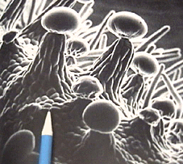

Figure 1-12:
Resin nodules on a female Cannabis
sativa flower ("bud").
These sticky, globular secretions have the greatest concentrations
of the marijuana drug. (Photo from Magnifications.
Copyright © 1977 by David Scharf.
Reprinted by permission of Schocken Books, published by Pantheon
Books,
a
Division of Random House, Inc. and Century Hutchinson, London.)